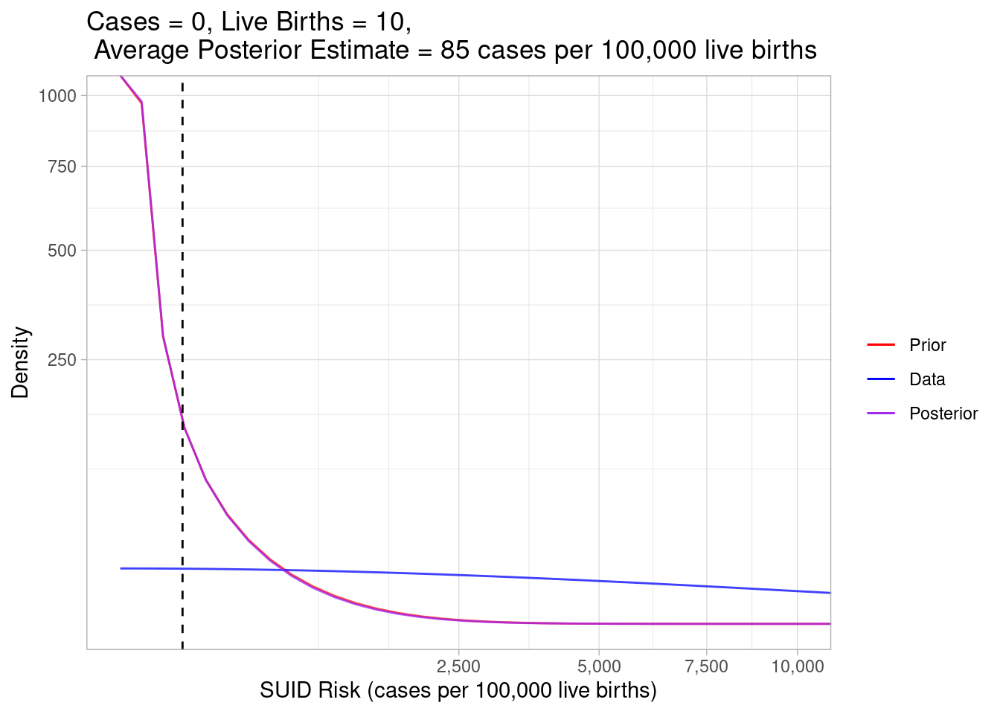
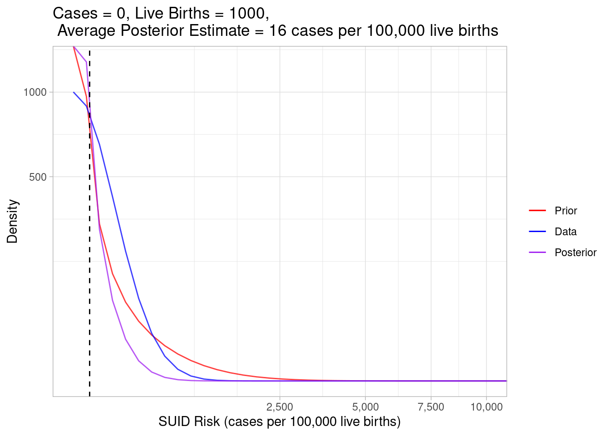
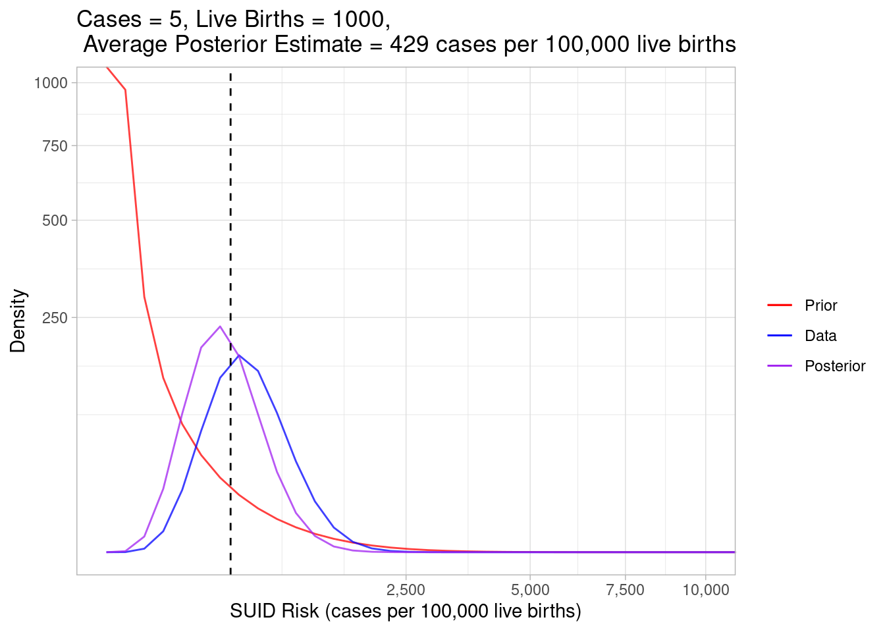
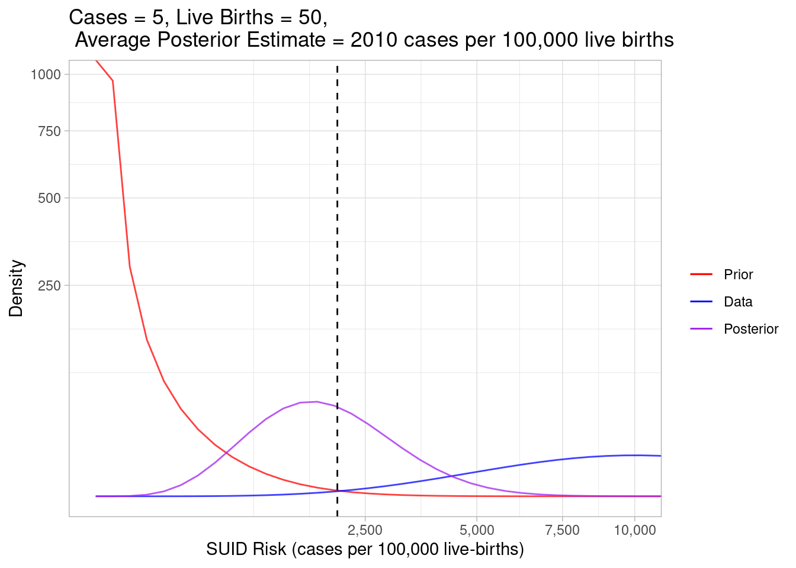

What Makes Bayesian Methods Different and Why Should I Care?
suid
infant-safety
pediatrics
epidemiology
statistics
Author
Daniel P. Hall Riggins, MD
Published
September 8, 2022
In my last post, I showed how to estimate risk of sudden unexpected infant death (SUID) in census tracts using Bayesian methods. The Bayesian approach is a separate branch of statistics from the Frequentist approach that most of us learned in school. Historically, Frequentist methods were so dominantly favored, many people may not have been aware that the statistics they were learning were termed “Frequentist” and that there was an alternative “Bayesian” approach available.
My objective for this post is to outline enough of the Bayesian approach to explain why it is better suited to the use-case of estimating SUID risk in small areas, then to give a set of examples to build intuition around how the method is working under the hood.
For a more in-depth introduction to Bayesian statistics, check out the textbook “Bayes Rules! An Introduction to Applied Bayesian Modeling”, which is available online for free. I adapted the source code from it’s companion package {bayesrules} to develop the visualizations in this post.
The Challenge
Epidemiology works with seemingly idiosyncratic denominators when representing incidence or risk. For example, the overall incidence of SUID in Cook County, IL for 2014 was 88.3 cases per 100,000 live births. While it would be just as mathematically valid to represent it as 0.000883 cases per single live birth, that doesn’t make sense in human terms. When considering a rare event, you want to use a large pool of people as your reference denominator.
Let’s assume the incidence of 88.3 accurately represents the underlying risk of SUID in the county for 2014. If we know that there were 140,000 live births in the next five years, then we would expect there to be about 124 cases of SUID.
\[Expected \space New \space Cases \space in \space the \space County = Incidence \times Live \space Births =\]
\[\frac{88.3 \space cases}{100,000 \space live \space births} \times 140,000 \space live \space births \approx 124 \space cases \]
But let’s zoom in to a single census tract where there were 240 live births over the same time period. Using the formula above, we would expect to observe zero cases. However, given what we know about incidence for the whole county, we wouldn’t observe zero cases and assume the underlying risk for that individual tract was actually zero. Estimating risk is hard when an event is rare and/or the reference pool of people is small.
Why Use Bayesian Methods to Solve this Challenge?
The “Frequentist” approach to statistics uses data in isolation from “prior knowledge”. If we observe 0 cases out of 240 live births in a census tract, our estimate of the underlying risk is 0 cases per 100,000 live births–even if our knowledge about the county as a whole suggests the underlying risk is closer to 88.3. Furthermore, if we want to make inferences about our data, Frequentist methods require a certain threshold sample size (for example n = 30) to be accurate. If the pool of live births in a census tract is something small like 13 total, than we expect up front that our estimate is going to be out of whack.
In contrast, Bayesian methods weigh the observed data against prior knowledge. If we have a lot of observed data, the final estimate will rely mostly on that data and look similar to the Frequentist estimate. But if we don’t observe a lot of data, the prior knowledge weighs more heavily into the estimate and will diverge away from the Frequentist estimate.
Examples
Another important distinguishing characteristic of Bayesian methods, is that they represent the uncertainty of an estimate using a distribution. In my previous post, we used a “Beta distribution” and outlined our process for specifying its parameters to represent our prior knowledge as follows:
The shaded red area represents the full range of plausible SUID risk values represented by our prior knowledge. The point where the curve is highest corresponds to the most plausible value (0) and we can average over the whole curve to get an expected risk of 88.3. These are useful point estimates but we hold onto the whole distribution to say the true risk could vary anywhere from 0 to 2500. Next, we can overlay a range of plausible values based on hypothetical data where we observed 1 case of SUID in 270 live births:
The data alone thinks the most plausible risk values are much higher than our prior understanding suggested. Bayesian methods help us weigh between these two somewhat conflicting sources of information by combining the prior expectations and the observed data to give us a “posterior” estimate:
I’ve taken out the shaded regions for visual clarity, but the area under each curve is still representing the most plausible values. Look how the purple posterior curve distributes itself in between the red and blue ones. Bayesian statistics weighed our prior expectations against the data and estimated the true risk to be somewhere in between.
To get some better intuition about what’s happening, let’s look at some extreme scenarios. First, what if we observed zero cases in a census tract with very few live births?
Code
plot_beta_binom_variation(0.189, 213, 0, 10)

In this example, the data gave us very little information so the prior expectation and posterior estimation curves look almost identical. The blue curve is very spread out, indicating a wide range of plausible risk values based on the data alone.
Code
plot_beta_binom_variation(0.189, 213, 0, 1000)

This example considers a census tract where we still observed zero cases, but there were many live births, meaning there were more opportunities for a case of SUID to happen. Given there were so many observed live births, the data weighed much more heavily into the posterior, which estimated the true risk (16) to be lower than our prior expectations (88.3).
Code
plot_beta_binom_variation(0.189, 213, 5, 1000)

In this example, we still observed 1000 live births, so the data heavily weighed into our posterior, but we increased the case count to 5, so the estimated true risk increased to a whopping 429.
Code
plot_beta_binom_variation(0.189, 213, 5, 50)

And finally, in this example, we still observed 5 cases, but we decreased the number of live births to 50. Using the data alone, we calculated the risk to be very high, but the posterior curve hung back toward the prior curve because the weight of our observed data was less than when we observed 1000 live births.
Wrap-Up
Some people argue that Bayesian statistics introduce too much subjectivity by letting us incorporate “arbitrary” prior expectations. Bayesians counter that statistical analysis always involves subjective interpretation. When we look at risk estimates based on the data alone, we adjust our trust in those numbers based on external knowledge. Bayesian methods simply give us a way to more formally define and weigh those expectations into our estimates. In the case of SUID risk for small populations in small geographic areas, it’s really helpful to moderate extreme estimates created by limited data using the Bayesian prior.